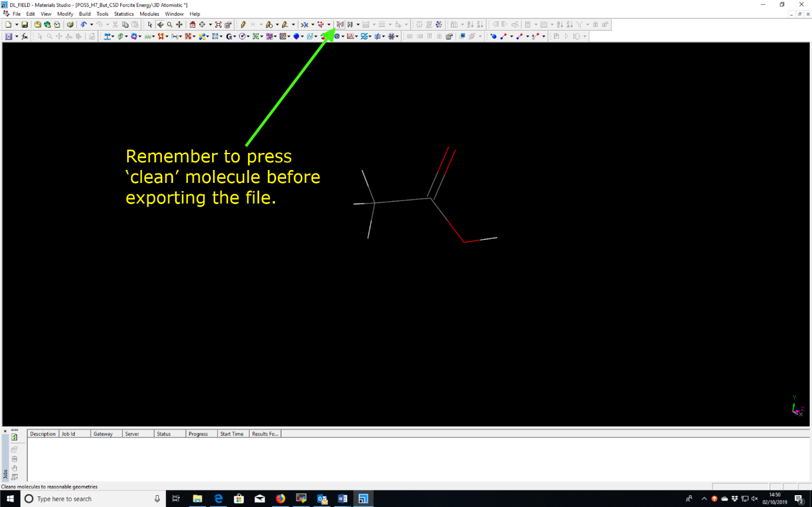
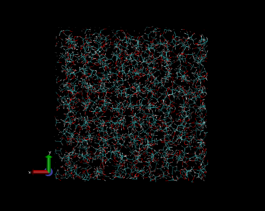

Sample Preparation¶
Version 1.0, last update: October 2019 Chin Yong, Computation Chemistry Group, DL.
The aim of these instructions is to show you how to simulate a pure ethanoic acid liquid at 300 K. We will build a fully atomistic model with flexible bonds. There are several possible ways to achieve the same purpose, and we will work through the simplest approach.
- Create a user configuration
Use a standard third party modelling software to build a single ethanoic acid molecule (CH3COOH). For example, Chem3D, MS.
Tab ‘Clean’ (or the equivalent according to the modelling software) to adjust atoms into a sensible conformation. Export the molecule into the mol2 format e.g. ethanol.mol2.
Or, copy and paste the following ethanoic_acid.mol2 file (using a text editor)
# Mol2 file generated by Materials Studio
@<TRIPOS>MOLECULE
"Sketch 1"
8 7 0 0 0
SMALL
USER_CHARGES
@<TRIPOS>ATOM
1 C -1.78117 0.275305 0.284335 C.3 0 **** 0
2 C -1.09347 0.556234 1.63341 C.2 0 **** 0
3 O -1.41304 1.82081 2.39444 O.co2 0 **** 0
4 O -0.0370616 -0.389677 2.15247 O.co2 0 **** 0
5 H 0.0215376 -0.312594 3.25837 H 0 **** 0
6 H -1.8434 1.24099 -0.316571 H 0 **** 0
7 H -2.83143 -0.127017 0.466147 H 0 **** 0
8 H -1.17388 -0.494668 -0.297823 H 0 **** 0
@<TRIPOS>BOND
1 1 2 1
2 2 3 2
3 2 4 1
4 4 5 1
5 1 6 1
6 1 7 1
7 1 8 1
Warning
Importing structures from within Materials Studio’s (MS) database, then modifying elements and exporting as a .mol2 file could lead to labelling of elements that dl_field cannot use, which will lead to an error when running dl_field.
- Force field (FF) model setup using DL_FIELD
Step 1: Open and edit a DL_FIELD control file
Alternatively, edit the generic dl_field.control file already in the DL_FIELD directory.
Use OPLS2005 force field for pure ethanoic acid liquid at the standard density of 1.05 g/cm3. This essentially replicates the ethanol molecule (ethanol.mol2), then randomly orientates and replicates the molecule in the simulation box. We’re using a cubic simulation box measuring 40 x 40 x 40 angstrom. The file below shows the relevant parameters highlighted in pale yellow (which is quite difficult to detect against the pale green background!)
Ethanoic acid
1 * Construct DL_POLY output files
0 * Unuse slot.
opls2005 * Type of force field require (see list below for choices).
kcal/mol * Energy unit: kcal/mol, kJ/mol, eV, or K.
normal * Conversion criteria (strict, normal, loose)
1 * Bond type (0=default, 1=harmonic , 2=Morse)
1 * Angle type (0=default, 1=harmonic, 2=harmonic cos)
none * Include user-defined information. Put 'none' or a .udff filename
1 * Verbosity mode: 1 = on, 0 = off
./ethanoic_acid.mol2 * Configuration file.
none * Output file in PDB. Put 'none' if not needed.
1 1.05 g/cm^3 1.6 * Solution Maker: on/off, density, unit, cutoff)
1 * Optimise FIELD output size, if possible? 1=yes 0=no
1 * Atom display: 1 = DL_FIELD format. 2 = Standard format
2 * Vdw display format: 1 = 12-6 format 2 = LJ format
default * Epsilon mixing rule (organic FF only) : default, or 1 = geometric, 2 = arithmatic
default * Sigma mixing rule (organic FF only) : default, or 1 = geometric, 2 = arithmatic
2 * Epsilon mixing rule (inorganic FF only) : 1 = geometric 2 = arithmatic
1 * Sigma mixing rule (inorganic FF only) : 1 = geometric 2 = arithmatic
1 * Epsilon mixing rule (BETWEEN different FF) : 1 = geometric 2 = arithmatic
2 * Sigma mixing rule (BETWEEN different FF): 1 = geometric 2 = arithmatic
0 * Display additional info. for protein 1=Yes 0=No
0 * Freeze atoms? 1 = Yes (see below) 0 = No
0 * Tether atoms? 1 = Yes (see below) 0 = No
0 * Constrain bonds? 1 = Yes (see below) 0 = No
0 * Apply rigid body? 1 = Yes (see below) 0 = No
1 * Periodic condition ? 0=no, other number = type of box (see below)
40.0 0.0 0.0 * Cell vector a (x, y, z)
0.0 40.0 0.0 * Cell vector b (x, y, z)
0.0 0.0 40.0 * Cell vector c (x, y, z)
default * 1-4 scaling for coulombic (put default or x for scaling=x)
default * 1-4 scaling for vdw (put default or x for scaling=x)
0 300.0 * Include velocity? 1=yes, 0=no and scaling temperature.
1 * Position solute at origin? 1 = yes, 0=no
none 2.0 * Solvate model? none or specify solvent (see below) and distance criteria.
0 10.0 * Add counter ions? 1=yes, 0=no, minimum distance from solute
0 * MM energy calculation. 1=Yes, 0=No
20.0 * Cut off for electrostatic energy calculation (angstrom)
20.0 * Cut off for vdw energy calculation (angstrom)
| TIPS: | In the Solution Maker section, the cut-off: 1.6 angstroms indicates the minimum distance between the molecules. The smaller the value, the easier it is for DL_FIELD to pack the molecule in the simulation box. Hand-waving experience shows that a value of less than 2.0 angstrom will be required to create a liquid system, depending on the density and initial structure of the molecule. If DL_FIELD reports a failure to pack the molecule, reduce the cut-off value and run DL_FIELD again. |
|---|
Note
Notice that the control file indicates all atom labels will be generated in DL_FIELD format (DL_F Notation). This is essential for carrying out atomic interaction analysis in DL_ANALYSER.
Step 2: Using a text editor open and edit the file dl_f_path (shown below) in the DL_FIELD home directory, if necessary. Make sure the path for the DL_FIELD control file is correct.
library = lib/
solvent = solvent/
output = output/
…
…
…
control = dl_field.control
…
…
| TIP: | If the DL_FIELD control file is not located in the same directory as the dl_field executable (e.g. dl_field.control above) then remember to specify the correct path to the file. |
|---|
Step 3: Run dl_field for example type the following from within the dl_f_4.5 directory:
$: ./dl_field
An example section of the output to the screen while dl_field is running is shown below:
Apply periodic boundary conditions: cubic.
Total atom = 8
Reading atomic info in Molecular Group not_define
Initialise data for atom typing in DL_F Notation...
Setup neighbour....
Setup bonds....
Begin ATOM_TYPE determination using DL_F Notation...
Finish.
Setup information for POTENTIAL opls2005
Time taken since program starts: 0.22 s
Analysing Molecular Group: not_define
Total organic CG: 301
Total inorganic CG: 10
Reading atomic info in Molecular Group not_define
Note:
ATOM_KEYs in the mol2 file do not appear to match with opls2005 FF.
DL_FIELD will attempt to determine ATOM_KEYs and charges in usual ways.
Finish.
Assigning potential parameters...
For Molecular Group 1 - not_define
Finish assigning.
Structures have been converted successfully.
Now making solution model...
max = 15048 num = 674
limit_x= 11 limit_y=11 limit_z=11
frac=1.723886 1.723886 1.723886
drift limit (+/-) = 0.095771 0.095771 0.095771
num of mole = 674 Molecule size = 4.252902
100 molecules added, 574 more to go. Please be patient...
200 molecules added, 474 more to go. Please be patient...
300 molecules added, 374 more to go. Please be patient...
400 molecules added, 274 more to go. Please be patient...
500 molecules added, 174 more to go. Please be patient...
600 molecules added, 74 more to go. Please be patient...
Program executed successfully. Thank you for using DL_FIELD.
Time taken for conversion: 6.28 s
Step 4: The output can be found in the directory output where you will find the files: dl_f_notation.output, dl_poly.CONFIG, dl_poly.CONTROL, dl_poly.FIELD, and readme.txt. Inspect the files. dl_poly.CONFIG contains the coordinates of all of the (ethanoic) molecules contained within a simulation box. This file is needed for DL_POLY to run the molecular dynamics simulation.
Ethanoic acid (this is a title)
0 1
40.0000000000 0.0000000000 0.0000000000
0.0000000000 40.0000000000 0.0000000000
0.0000000000 0.0000000000 40.0000000000
C1p 1
18.85180580 19.74820756 -16.60234687
C20 2
19.96169660 -19.25230177 -16.97786859
O20E 3
-18.87383326 -19.03107800 -16.04217983
O20L 4
19.84151883 -18.43124136 -18.23944963
H20O 5
-19.14784798 -18.12867977 -18.58509035
H1C 6
18.61451397 19.84619593 -15.49257258
H1C 7
19.20133504 18.68666299 -16.82351896
…
…
…
The molecular system can be viewed in VMD . To do this, make sure the total number of atoms is inserted into dl_poly.CONFIG as follows, before it’s opened within the visualizer program:
| TIP: | The total number of atoms can be found by looking at the LHS entry at the bottom of the dl_poly.CONFIG file. Then, insert the same value into the top RHS of the dl_poly.CONFIG file as shown (highlighted) below. |
|---|
Ethanoic acid (this is a title)
0 1 5392
40.0000000000 0.0000000000 0.0000000000
0.0000000000 40.0000000000 0.0000000000
0.0000000000 0.0000000000 40.0000000000
C1p 1
18.85180580 19.74820756 -16.60234687
C20 2
19.96169660 -19.25230177 -16.97786859
O20E 3
-18.87383326 -19.03107800 -16.04217983
O20L 4
19.84151883 -18.43124136 -18.23944963
…
…
…
To view the box of solvent in VMD from the command line type:
$: vmd
and then load the dl_poly.CONFIG file using the VMD ‘File’ tab.
Notice that the molecules below look a ‘little bit’ ordered in their packing. This ordered liquid needs to be equilibrated before being sampled. Equilibration is the first part of the molecular dynamics simulation, and is covered in the next section.
